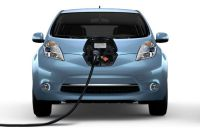
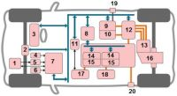

Электрический автомобиль.
Электрический автомобиль, хотим мы этого или нет, является безусловным и неотвратимым будущим автомобилестроения, при этом будущим ближайшим. Многие производители по всему миру вкладывают значительные средства в разработку электромобилей, чему способствует неуклонный рост цен на нефтепродукты, необходимость снижения вредных выбросов от автомобиля, а также разработки устройств хранения энергии, технологий энергопотребления.

В настоящее время крупнейшими рынками электрических автомобилей являются США, Япония, Китай и ряд европейских стран (Франция, Нидерланды, Норвегия, Германия, Великобритания). Из производителей электрокаров выделяются компании Nissan (Leaf), Mitsubishi (I MiEV), Toyota (RAV4EV), Honda (FitEV), Ford (Focus Electric), Tesla (Roadster и Model S), Renault (Fluence Z.E. и ZOE), BMW (Active C), Volvo (C30 Electric). Наша страна пока находится в стороне и от производства и от потребления электромобилей, за исключением разработок отдельных энтузиастов (известная Lada Ellada не в счет, она построена на импортных комплектующих).
Под термином «электрический автомобиль» или «электромобиль» понимается транспортное средство, которое приводится в движение одним или несколькими электрическими двигателями. При этом питание электромотора может осуществляться от аккумуляторной батареи, солнечной батареи или топливных элементов. Наибольшее распространение получила конструкция электромобиля с питанием от аккумуляторной батареи.
Аккумуляторная батарея требует регулярной зарядки, которая может осуществляться от внешних источников тока, путем рекуперации энергии торможения, а также от генератора на борту электромобиля. Генератор приводится от двигателя внутреннего сгорания, но такая схема, по сути, электромобилем уже не является, а относится к одной из разновидностей гибридного автомобиля.
Работа по созданию электрических автомобилей ведется в двух направлениях - разработка новых моделей и адаптация серийных автомобилей. Последнее направление более предпочтительное, т.к. менее затратное. Выпускаемые электромобили в зависимости от предназначения можно разделить на три группы:
- городские электромобили (максимальная скорость до 100 км/ч);
- шоссейные электромобили (максимальная скорость свыше 100 км/ч);
- спортивные электромобили (максимальная скорость свыше 200 км/ч).
В отличие от автомобиля с двигателем внутреннего сгорания электромобиль имеет более простую конструкцию, включающую минимальное количество движущихся частей, а значит более надежную.
Основными конструктивными элементами электрического автомобиля являются: аккумуляторная батарея, электродвигатель, трансмиссия, бортовое зарядное устройство, инвертор, преобразователь постоянного тока, электронная система управления.

Схема электрического автомобиля
Тяговая аккумуляторная батарея обеспечивает питание электродвигателя. На электромобиле, в основном, используются литий-ионная аккумуляторная батарея, которая состоит из ряда соединенных последовательно модулей. На выходе аккумуляторной батареи снимается напряжение постоянного тока порядка 300В. Емкость батареи должна соответствовать мощности электродвигателя.
Одним из основных элементов электромобиля является электродвигатель, который служит для создания необходимого для движения крутящего момента. В качестве тягового электродвигателя используют трехфазные синхронные (асинхронные) электрические машины переменного тока мощностью от 15 до 200 и более кВт. В сравнении с ДВС электродвигатель имеет высокую эффективность и меньшие потери энергии. КПД электродвигателя составляет 90% против 25% у ДВС.
Основными преимуществами электродвигателя являются:
- реализация максимального крутящего момента во всем диапазоне скоростей;
- возможность работы в двух направлениях без дополнительных устройств;
- простота конструкции, воздушное охлаждение;
- возможность работы в режиме генератора.
В ряде конструкций электромобилей используется несколько электродвигателей, которые приводят отдельные колеса, что значительно повышают тяговую мощность транспортного средства. Электродвигатель может быть помещен непосредственно в колесо автомобиля, сокращая до минимума трансмиссию. Но такая схема электромобиля увеличивает неподрессоренные массы и ухудшает управляемость.
Трансмиссия электромобиля достаточно проста и на большинстве моделей представлена одноступенчатым зубчатым редуктором. Бортовое зарядное устройство позволяет заряжать аккумуляторную батарею от бытовой электрической сети. Инвертор преобразует высокое напряжение постоянного тока аккумуляторной батареи в трехфазное напряжение переменного тока, необходимое для питания электродвигателя.
Преобразователь постоянного тока обеспечивает зарядку дополнительной двенадцативольтовой аккумуляторной батареи, которая используется для питания различных потребителей электроэнергии (электроусилитель рулевого управления, электрический отопитель салона, кондиционер, система освещения, стеклоочистители, аудиосистема и др.)
Электронная система управления выполняет в электрическом автомобиле несколько функций, направленных на обеспечение безопасности, энергосбережение и комфорт пассажиров:
- управление высоким напряжением;
- регулирование тяги;
- обеспечение оптимального режима движения;
- управление плавным ускорением;
- оценка заряда аккумуляторной батареи;
- управление рекуперативным торможением;
- контроль использования энергии.
Конструктивно система объединяет ряд входных датчиков, блок управления и исполнительные устройства различных систем электромобиля. Входные датчики оценивают положение педали газа, педали тормоза, селектора переключения передач, давление в тормозной системе, степень заряда аккумуляторной батареи. На основании сигналов датчиков блок управления обеспечивает оптимальное для конкретных условий движение электромобиля. Основные параметры работы электромобиля (потребление энергии, восстановление энергии, остаточный заряд аккумуляторной батареи) визуально отображаются на панели приборов.
Эксплуатация электромобиляНесмотря на внешнее сходство и аналогичные органы управления, эксплуатация электромобиля существенным образом отличается от эксплуатации автомобиля с двигателем внутреннего сгорания. Именно эксплуатационные проблемы сдерживают массовое использование электромобиля, среди которых:
- высокая стоимость;
- ограниченная автономность;
- значительное время заряда аккумуляторов.
Высокую стоимость автомобиля во многом определяет цена аккумуляторной батареи. Несмотря на отличные эксплуатационные характеристики, литий-ионная аккумуляторная батарея очень дорогая в производстве и помимо этого имеет ограниченный ресурс (5-7 лет). Это заставляет разрабатывать новые источники тока (топливные элементы), способы хранения энергии (суперконденсаторы, маховики), совершенствовать конструкцию тяговых аккумуляторных батарей (литий-полимерные аккумуляторы).
Текущие расходы на содержание электрического автомобиля значительно ниже (в 3-4 раза) расходов на содержание автомобиля с ДВС и зависят, в основном, от стоимости электроэнергии. Эксплуатация электромобиля экономически выгодна в странах, где производство электроэнергии в меньшей степени зависит от ископаемого топлива.
Одна из самых серьезных проблем эксплуатации электромобиля его невысокая степень автономности. Величина пробега электромобиля без подзарядки зависит от многих факторов: емкости аккумуляторной батареи, характера и условий движения, стиля вождения, степени использования вспомогательных систем. В настоящее время средняя дальность использования электромобиля составляет порядка 150 км при скорости движения 70 км/ч. При движении с большей скоростью, пробег резко уменьшается, например, при скорости 130 км/ч (нормальная шоссейная скорость) он составляет уже 70 км. Именно поэтому электромобиль в большинстве своем позиционируется как транспортное средство для городских поездок.
Современные технологии позволяют увеличить степень автономности электромобиля до 300 и более км, среди которых следует отметить систему рекуперативного торможения (возвращает до 30% затрачиваемой энергии), аккумуляторы повышенной емкости, электронная оптимизация процессов движения.
Неотъемлемым атрибутом эксплуатации электромобиля является необходимость периодической зарядки аккумуляторной батареи, которая занимает много времени. Решение данной проблемы реализуется по нескольким направлениям:
- нормальная зарядка аккумуляторной батареи (осуществляется от бытовой электрической сети мощностью 3-3,5 кВт, предполагает установку на электромобиле специального зарядного устройства, продолжительность до полной зарядки батареи составляет 8 часов);
- ускоренная зарядка аккумуляторной батареи (производится на специальных станциях мощностью до 50 кВт, продолжительность зарядки до 80% емкости батареи составляет 30 минут);
- замена разряженной аккумуляторной батареи на заряженную батарею (выполняется автоматически на специальных обменных станциях).
Реализация указанных направлений требует развития инфраструктуры (зарядных и обменных станций, мест парковки), стандартизации технических решений, разработки правил для поставщиков услуг.